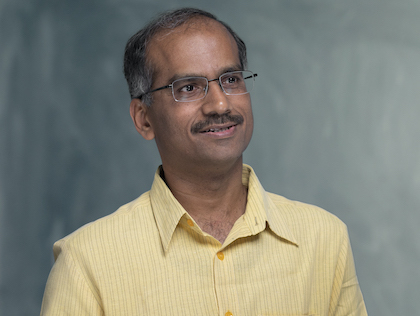
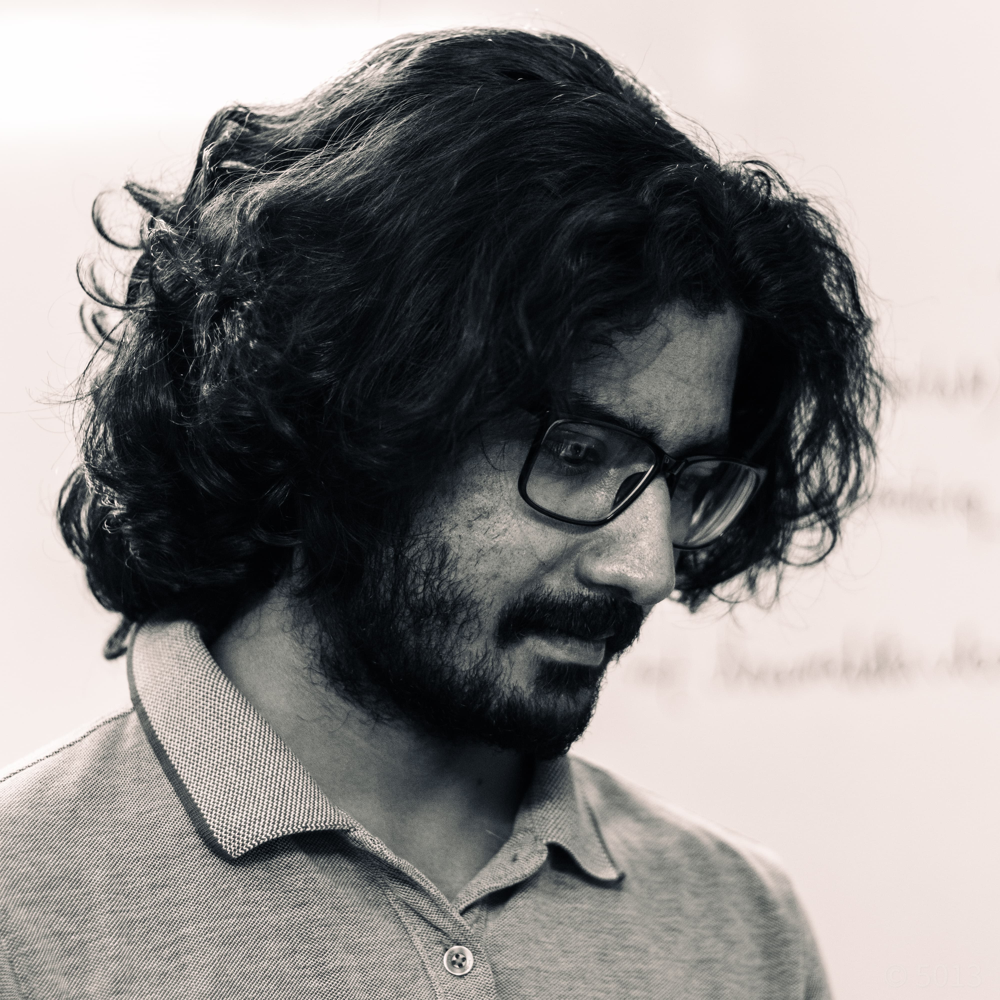
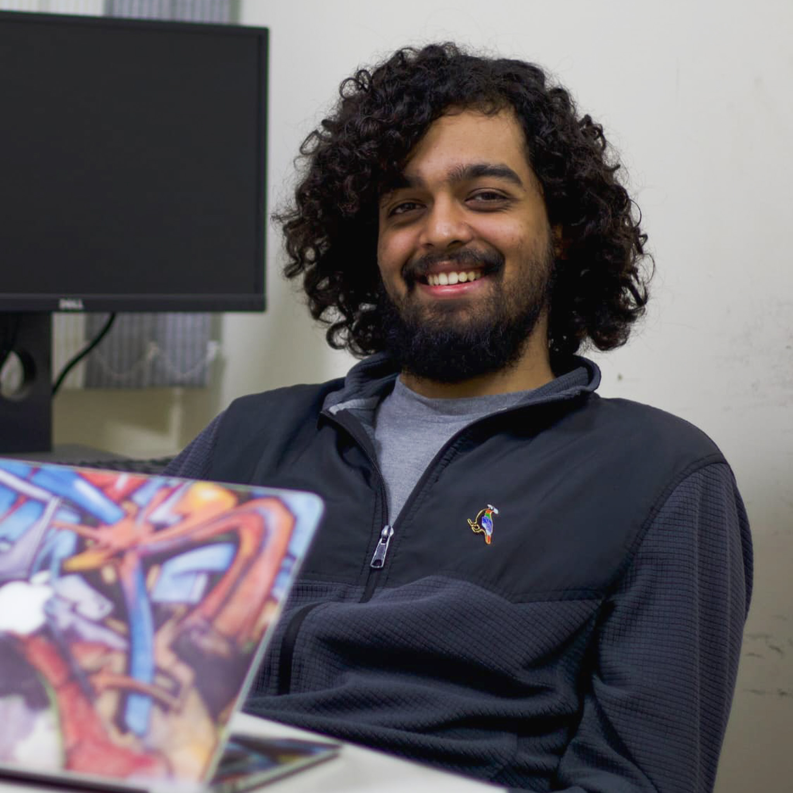
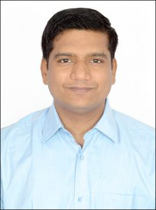
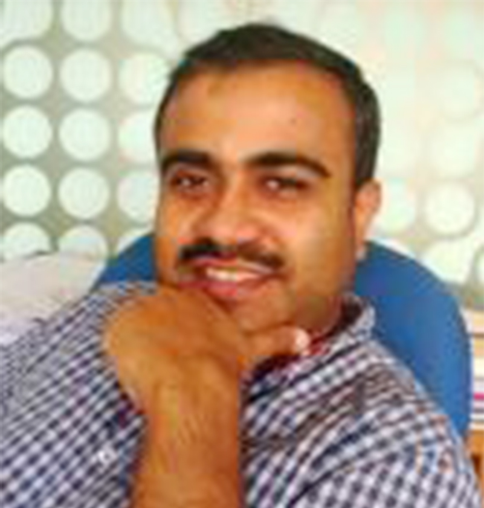
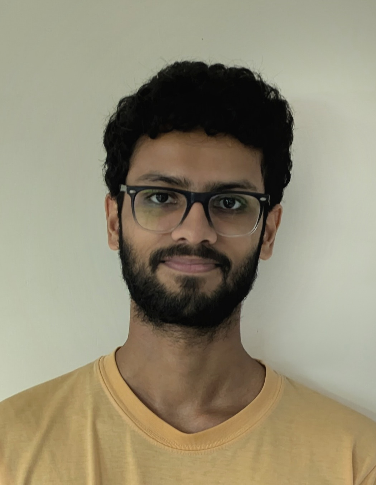
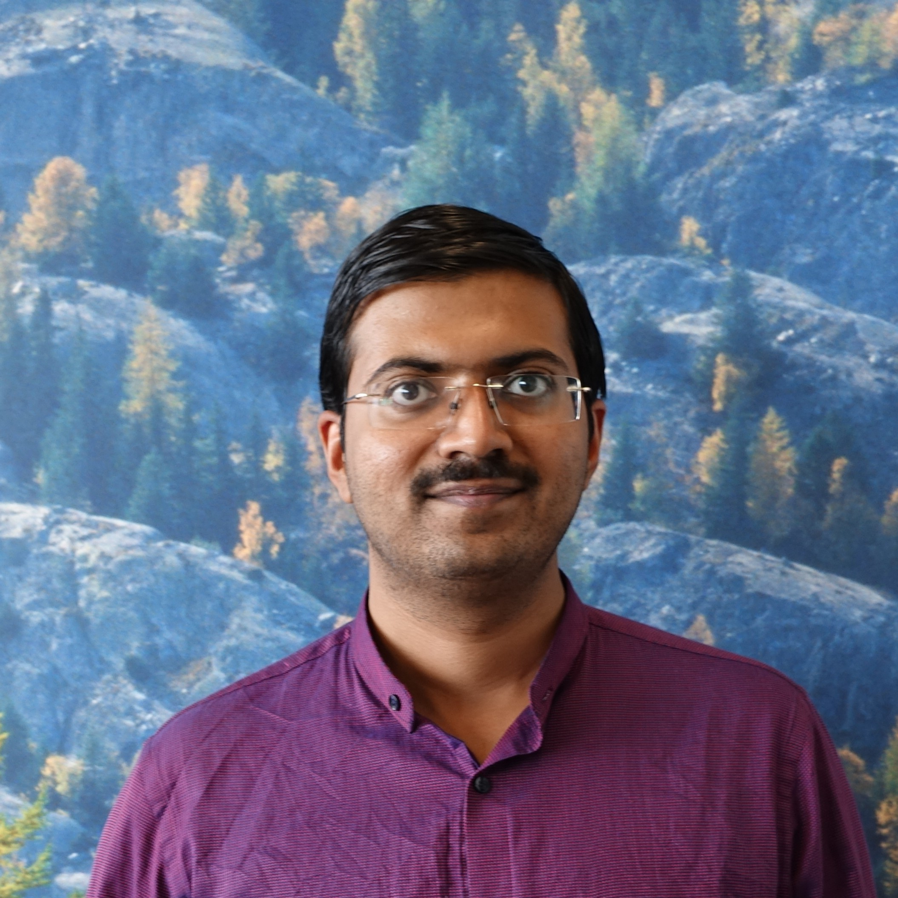
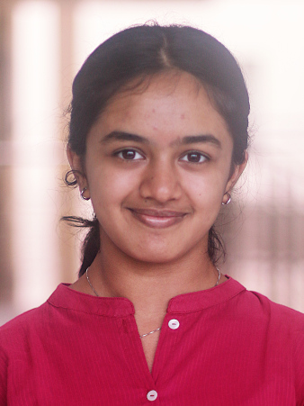
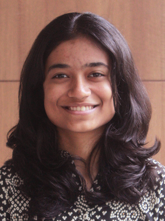

Research group
Principal investigator, Ph.D. students, postdoctoral fellows, thesis students, and research interns. Dates and affiliations follow the IISER group directory.
Principal investigator

M. S. Santhanam
Principal investigator · Professor of Physics
Indian Institute of Science Education and Research Pune
Current Ph.D. students
Archana Santhosh
Joined 2025
Shravani Sardeshpande
Joined 2025
Garvit Vaid
Joined 2025
Nisarg Vyas
Joined 2023
(working on quantum chaos and quantum machine learning)J. Bharathi Kannan
Shaunak Roy
Joined 2019
(working on extreme events and network stability)Ph.D. alumni


Aanjaneya Kumar
Graduated 2024
Presently post-doc at Santa Fe Institute and Princeton University.S. Harshini Tekur
Sanku Paul
Graduated 2018
Presently INSPIRE faculty at SN Bose National Centre for Basic Sciences, Kolkata.Vimal Kishore
Graduated 2014
Presently assistant professor at Benaras Hindu University, VaranasiHarinder Pal
Graduated 2012
Presently a long-term scientist at UNAM, Mexico.Post-doctoral Fellows
P. G. Sreeram
2022–2025
S. Harshini Tekur
2022–2024

Udaysinh Bhosale
2015–2018
Presently assistant professor at NIT-Nagpur.Abhijeet Sonawane
2011–2013
Presently at Harvard Medical School, Harvard University, USA.
Jayendra Bandyopadhyay
2005–2006
Presently associate Professor at BITS-Pilani.Master's thesis students
Adwyth Nair
Thesis year 2026
Thesis : Quantum page-rank algorithms
Rishi Vora
M. Sreedev
Thesis year 2026 · IISER Mohali
Thesis : Algorithms for quantum reservoir computingAniruddha Trivedi
Thesis year 2025
Thesis : Quantum reservoir computing with kicked topDharmesh Yadav
Thesis year 2025
Thesis : Quantum reservoir computing with many-body systemsPawan Bhure
Thesis year 2023
Thesis : Machine learning based interaction-network recovery in dynamical systemsM. Pranav
Thesis year 2023
Thesis : Transport and congestion properties on real networksPranay Naredi
Thesis year 2022
Thesis : Quantum walks as toolkits for quantum machine learning algorithmsPrachi Srivastava
Thesis year 2022
Thesis : Extreme events in higher order networks
Onkar Sadekar
Thesis year 2021
Thesis : Spreading processes on complex networks and infectious diseases Hazard Map for IndiaMansi Budamagunta
Thesis year 2021
Thesis : A Hazard Map for infectious diseases based on Indian transportation networksAnjali Nambudiripad
Thesis year 2020
Thesis : Semiclassical dynamics and entanglement in many-body linear rotorJ. Bharathi Kannan
Thesis year 2020
Thesis : Many-body localisation and thermalisation with coupled quantum kicked rotorV. Sowmya
Thesis year 2019
Thesis : Extreme events and their control on time dependent networksVikram Ravindranath
Thesis year 2019
Thesis : Quantum localisation and transport in aperiodically driven quantum systemsRushil Balasubramanian
Thesis year 2019
Thesis : Localisation in two-dimensional coupled kicked rotorsUndergrad research interns
Kevin BinnyThomas
3rd year, BS-MS

Niveditha Warrier
3rd year, BS-MS

Riya Sawale
4th year, BS-MS
Yakshita Rathore
4th year, BS-MS
Saranya Ray
4th year, BS-MS